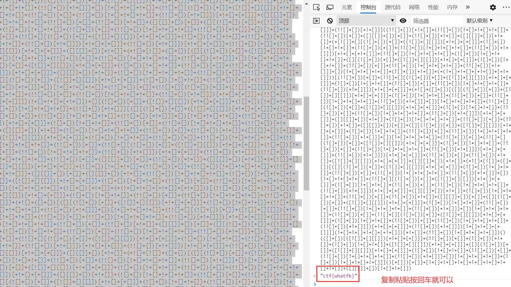
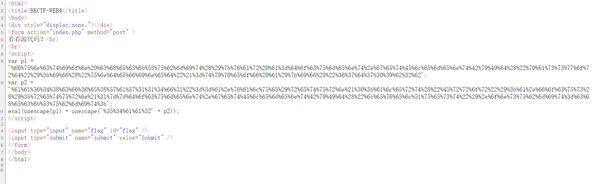

持续更新中… 2020.07.24
展开全文有图片
1.web2 2020-7-9
查看源码之后一眼就能看到
flag：KEY{Web-2-bugKssNNikls9100}
2.计算器 2020-7-9
查看源码，图中所指限制了输入数字的个数，改成比计算结果大的数字就可以获得flag

flag：flag{CTF-bugku-0032}
3.web基础$_GET 2020-7-9
因为$_GET传参时请求的参数是在url中的，专业术语就是，查询字符串（名称/值对）是在 GET 请求的 URL 中发送的，因此修改网址在其后面加上?what=flag，回车得到flag。
详情请阅读w3school的html表单部分
flag：flag{bugku_get_su8kej2en}
4.web基础$_POST 2020-7-11
POST传值不同于GET传值，POST传值数据不会显示在 URL 中，也就是网址中，查询字符串（名称/值对）是在 POST 请求的 HTTP 消息主体中发送的，相对于GET传值是比较安全的，所以这里需要用到hackbar辅助传值，也就是下方的工具栏，在工具栏上方输入url，下方输入表达式，点击Execute按钮执行，值就会被传到服务器，服务器做出响应输出服务器中的参数，也就是这里的flag
flag：flag{bugku_get_ssseint67se}
5.矛盾 2020-7-11
实际上是弱类型比较，第一个if判断中的is_numeric判断其中的参数是否是纯数字，如果是返回true，否则返回false，第二个if是弱类型判断，这里的函数具体是，当其中的参数等于1时会输出flag。
当两个不同类型的参数进行 ‘==’ 比较而非 ‘===’ 比较时，将会转换成相同类型进行比较。
1 var_dump(“admin”==0); //true
2 var_dump(“1admin”==1); //true
3 var_dump(“admin1”==1) //false
4 var_dump(“admin1”==0) //true
5 var_dump(“0e123456”==”0e4456789”); //true
由第1个和第2个可知，当第一个字符为数字，后面都是字符串或字符时，字符串或字符将会等同于0，整体等于第1个数字加上0，又因为题目具体要求为与 1 比较，所以这时候的GET参数构造就应该为 1xxxxx，xxxxx为任意字母。
flag：flag{bugku-789-ps-ssdf}
6.web3 2020-7-11
查看源代码发现编码，结合unicode编码特点，确定为unicode编码
unicode一般有四种表示形式
1 &#x [Hex]: The
2 &# [Decimal]: The
3 \U [Hex]: \U0054\U0068\U0065
4 \U+ [Hex]: \U+0054\U+0068\U+0065
flag：KEY{J2sa42ahJK-HS11III}
7.域名解析 2020-7-17
先了解hosts文件，Hosts是一个没有扩展名的系统文件，可以用记事本等工具打开，其作用就是将一些常用的网址域名与其对应的IP地址建立一个关联“数据库”，当用户在浏览器中输入一个需要登录的网址时，系统会首先自动从Hosts文件中寻找对应的IP地址，一旦找到，系统会立即打开对应网页，如果没有找到，则系统再会将网址提交DNS域名解析服务器进行IP地址的解析。简单来说就是关联域名和url，也可以说是等于。
flag：KEY{DSAHDSJ82HDS2211}
8.你必须让他停下 2020-7-17

burpsuit抓包让他停下，有很多图片，应该是在第10张jpg里面，服务器响应代码里面有flag
flag：flag{dummy_game_1s_s0_popular}
9.变量1 2020-7-17
代码解释，先引用外部文件flag1.php，flag字符串包含在这个文件里面，isset() 函数用于检测变量是否已设置并且非 NULL，简单来说就是解释变量有没有赋值，有就true，没有false，进入if，GET赋值给args，第二份if判断有没有这些字符串，有就输出“args error！”然后退出，没有就继续下一行代码，var_dump函数就是输出变量的信息，其实就是输出变量里的东西，但是会多出来其他东西，而$$ 会导致两次变量转换，而恰好我们在url里输入的GLOBALS为全局变量，会输出这个程序里的所有全局变量，而外部文件引用要使用全局变量才能给别的文件使用，$args是字符串GLOBALS, $$args就是$GLOBALS，所以输出所有全局变量，其中就有包含flag字符串的全局变量。（其实你要是知道包含flag的全局变量也可以赋值给args，但是很显然不知道，所有用GLOBALS）
flag：flag{92853051ab894a64f7865cf3c2128b34}
10.web5 2020-7-17

查看源码，这是js的一种编码，直接输入控制台就能解码了，网页控制台就是简单的js简单代码交流的，类似python的一条一条代码交流的那个。还有类似的那个emoji编码也可以这样弄。
flag：ctf{whatfk}
11.头等舱 2020-7-17
源码啥都没有，抓包藏在表单里
flag：flag{Bugku_k8_23s_istra}
12.管理员系统 2020-7-17

简单的bp爆破，具体爆破方法直接百度
flag：flag{85ff2ee4171396724bae20c0bd851f6b}
13.web4 2020-7-17

源码里有url编码，组合起来url解码
然后把 67d709b2b54aa2aa648cf6e87a7114f1 提交到浏览器中